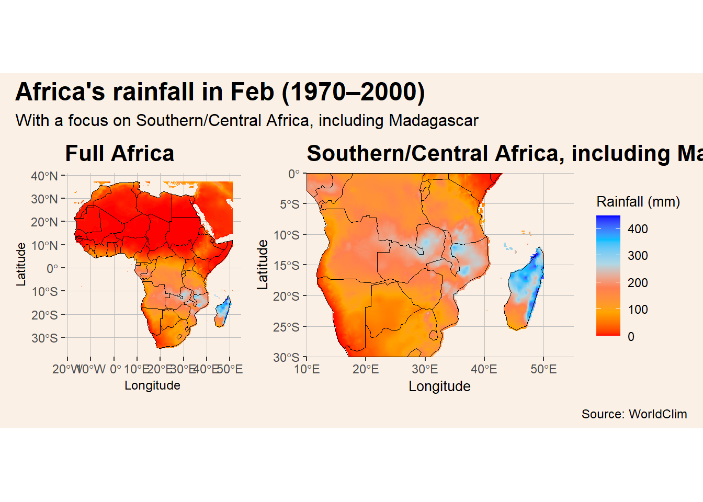

── Conflicts ────────────────────────────────────────── tidyverse_conflicts() ──
✖ tidyr::extract() masks terra::extract()
✖ dplyr::filter() masks stats::filter()
✖ dplyr::lag() masks stats::lag()
ℹ Use the conflicted package (<http://conflicted.r-lib.org/>) to force all conflicts to become errors
generate_rainfall_map <-function(month_index =1) { rain_month <- precipitation[[month_index]] rain_month_africa <-crop(rain_month, vect(africa_shp)) rain_df <-as.data.frame(rain_month_africa, xy =TRUE, na.rm =TRUE)colnames(rain_df) <-c("lon", "lat", "rain") rain_df_zoomed <- rain_df %>%filter(lon >= bbox["xmin"], lon <= bbox["xmax"], lat >= bbox["ymin"], lat <= bbox["ymax"]) africa_zoomed <- africa_shp |>st_crop(bbox) colors_rain <-scale_fill_gradientn(colors =c("red", "orange", "coral", "lightblue", "deepskyblue", "blue"),name ="Rainfall (mm)" ) map_africa <-ggplot() +geom_raster(data = rain_df, aes(x = lon, y = lat, fill = rain)) + colors_rain +geom_sf(data = africa_shp, fill =NA, color ="black", size =0.4) +labs(title ="Full Africa", x ="Longitude", y ="Latitude") +theme(plot.title =element_text(size =16, face ="bold"),plot.background =element_rect(fill ="linen", color =NA),panel.background =element_rect(fill ="linen", color =NA),panel.grid.major =element_line(color ="grey", size =0.3),axis.title =element_text(size =9),axis.text =element_text(size =9),legend.position ="none" ) map_detailed <-ggplot() +geom_raster(data = rain_df_zoomed, aes(x = lon, y = lat, fill = rain)) + colors_rain +geom_sf(data = africa_zoomed, fill =NA, color ="black", size =0.4) +labs(title ="Southern/Central Africa, including Madagascar", x ="Longitude", y ="Latitude") +coord_sf(xlim =c(10, 55), ylim =c(-30, 0), expand =FALSE) +theme(plot.title =element_text(size =16, face ="bold"),plot.background =element_rect(fill ="linen", color =NA),panel.background =element_rect(fill ="linen", color =NA),panel.grid.major =element_line(color ="grey", size =0.3),axis.title =element_text(size =10),axis.text =element_text(size =9),legend.background =element_rect(fill ="linen", color =NA),legend.key =element_rect(fill ="linen", color =NA),legend.title =element_text(size =10),legend.text =element_text(size =9),legend.position ="right" ) map_africa + map_detailed +plot_annotation(title =paste0("Africa's rainfall in ", month.abb[month_index], " (1970–2000)"),subtitle ="With a focus on Southern/Central Africa, including Madagascar",caption ="Source: WorldClim",theme =theme(plot.title =element_text(size =18, face ="bold"),plot.subtitle =element_text(size =12),plot.caption =element_text(size =9),plot.background =element_rect(fill ="linen", color =NA) ) )}
Plot: February Rainfall
generate_rainfall_map(2)
although coordinates are longitude/latitude, st_intersection assumes that they
are planar
Warning: attribute variables are assumed to be spatially constant throughout
all geometries
Warning: The `size` argument of `element_line()` is deprecated as of ggplot2 3.4.0.
ℹ Please use the `linewidth` argument instead.
Warning: Raster pixels are placed at uneven horizontal intervals and will be shifted
ℹ Consider using `geom_tile()` instead.

Commentary
### as to a small description;i did a little bit more here:-> i fetched the rainfall data and africa shapefile (also had to disable s2)-> then i defined a bounding box for a region i actually wanted to zoom in on which is southern + central africa, plus madagascar, because after looking at the data these were the areas with actual rain-> i created a custom color scale that looks more like an actual rainfall gradient-> i wrote a function that builds two maps at once: one full overview of africa and one zoomed-in map-> the rainfall data gets cropped and filtered differently for each panel – the full map hides the legend because we only need 1 legend and it will be shown for the zoomed map-> country borders were given a rather normal, visible color (black) this time-> both maps were then stitched together using patchwork, so it feels more like a dashboard-> i kept the styling simple – beige background, some grid lines and no agressive coloring